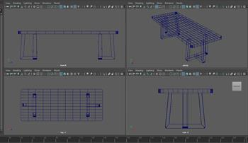
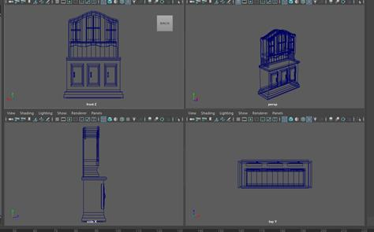
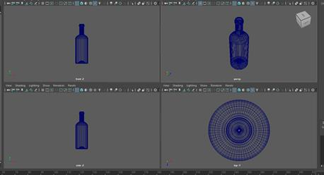
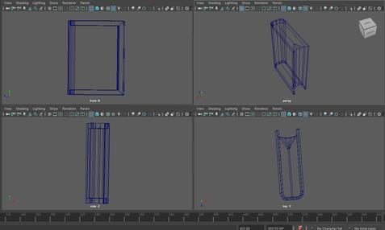
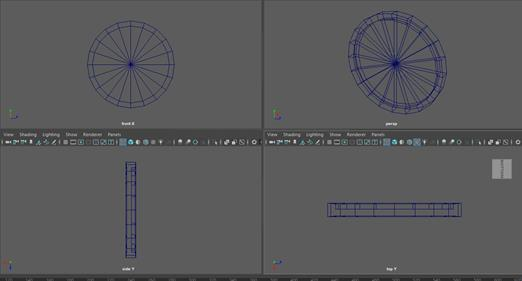
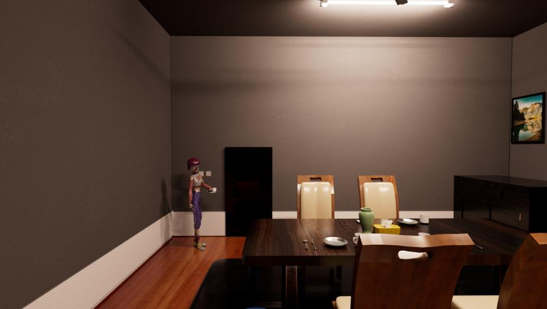
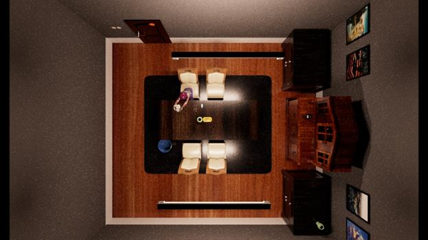
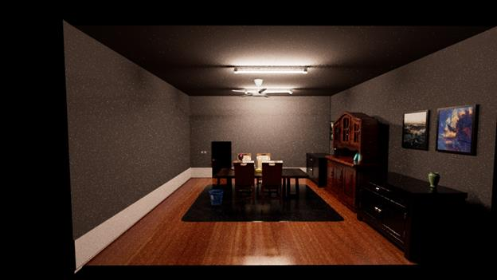

Dining table & chair — modeled furniture assets.
A university group project that tells a story through a 3D home environment and cinematic scenes. My individual focus was the dining room environment and its modeled objects.

// Dining room environment design
I worked on the dining room environment where the character has breakfast. My modeled assets included furniture, decorative objects, and other room details.
I also contributed to the presentation of the dining room scene through lighting, materials, scene composition, and camera views.
// Selected models from my dining room scene

Dining table & chair — modeled furniture assets.

Cabinet, door & door handle.

Decorative objects — vase and wine bottle.

Book & phone.

Clock & ceiling fan.

Dining room staging — the environment in the cinematic scene.
// Dining room views



// The full group animation